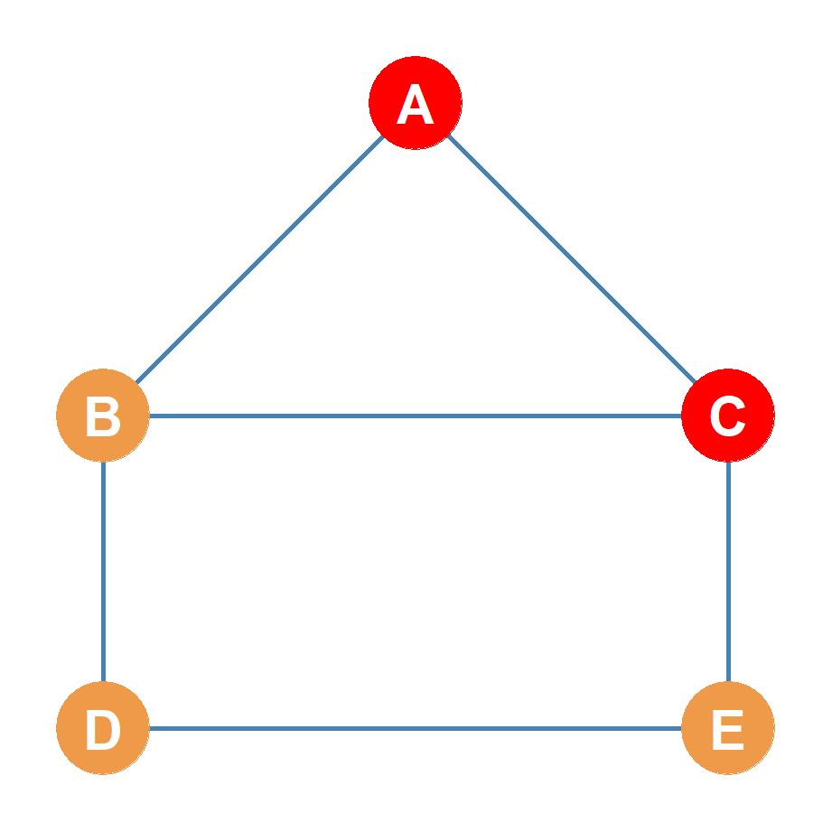
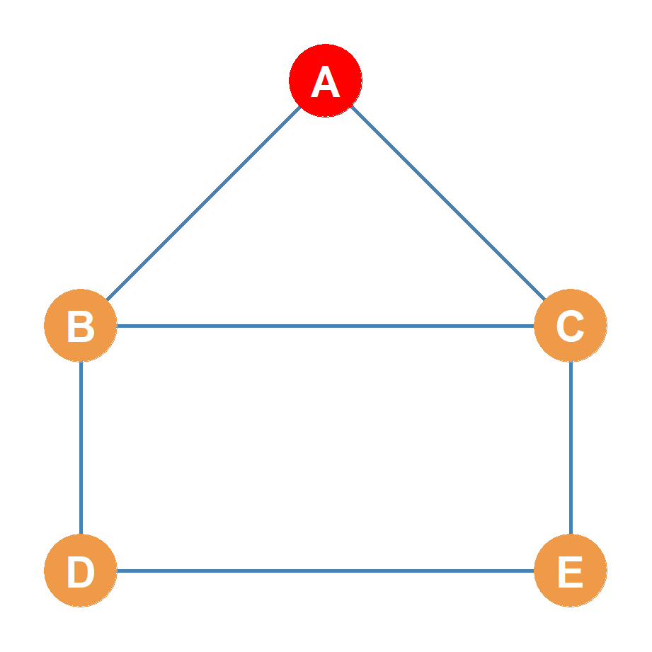
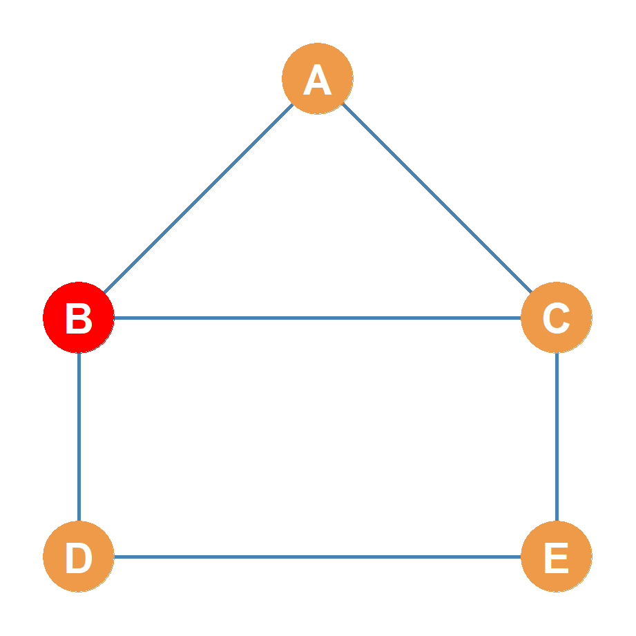
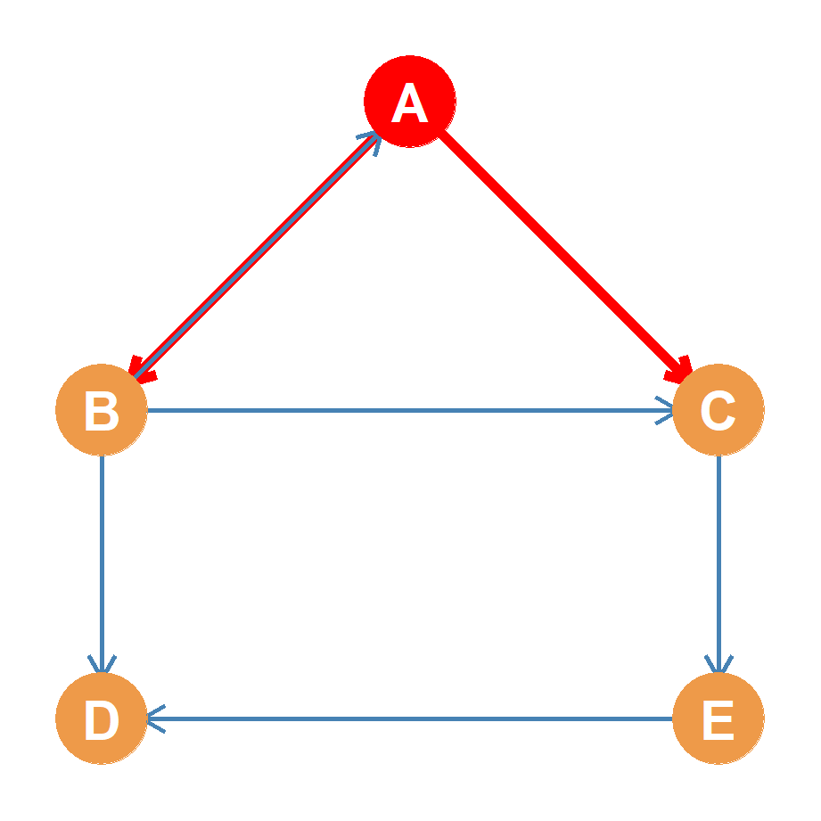
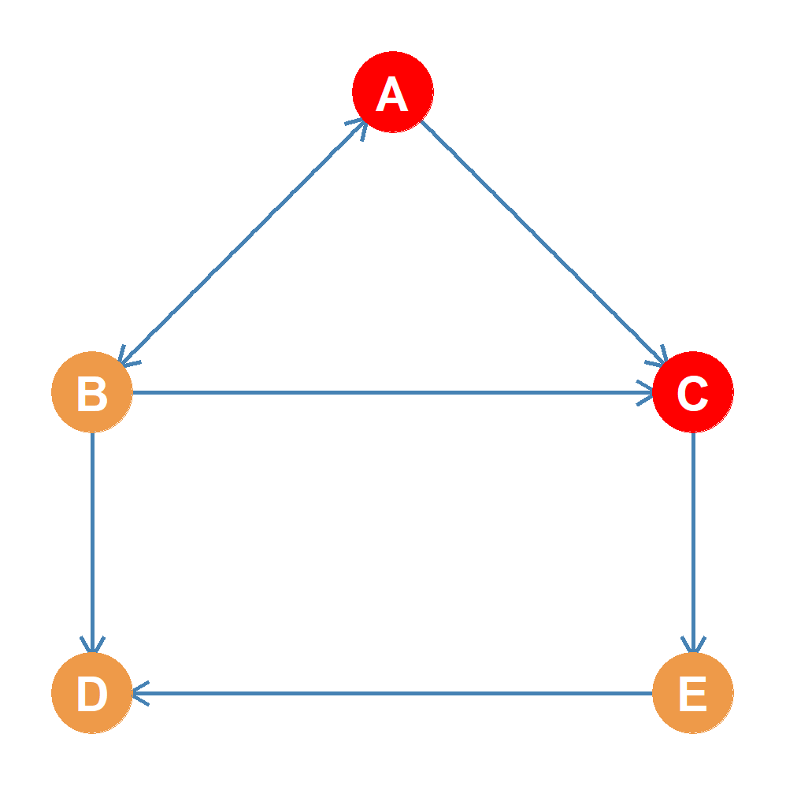
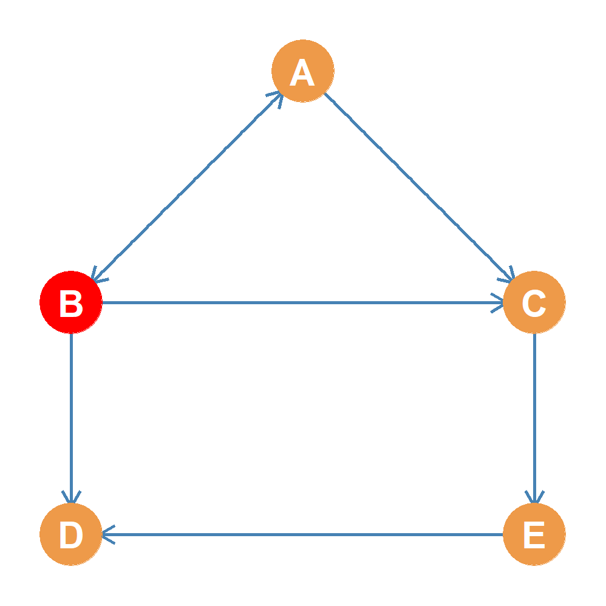
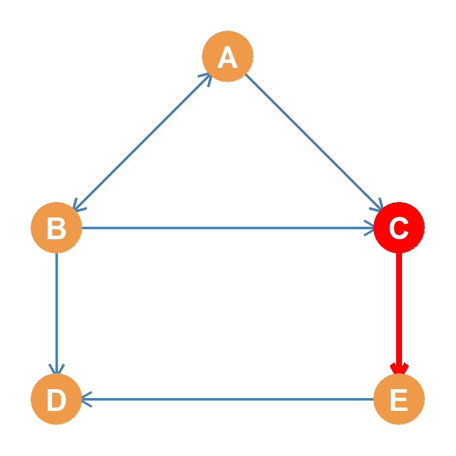
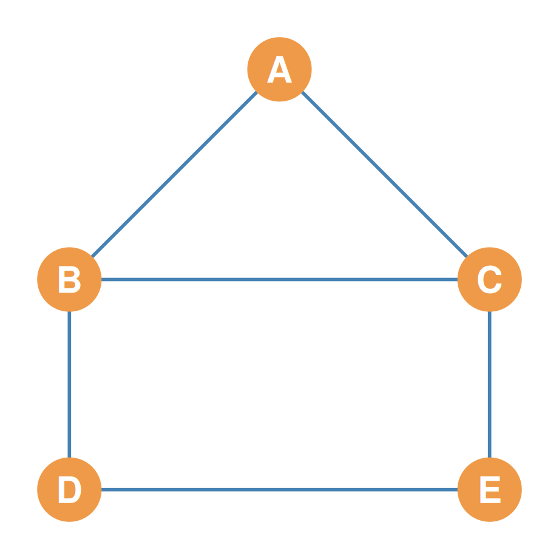
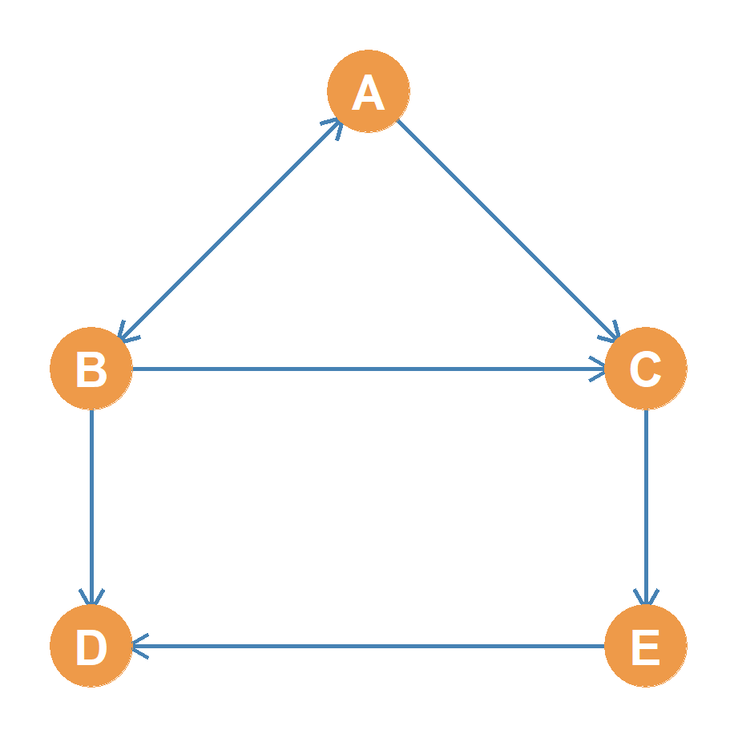

Networks, Graphs, and Matrices
An Introduction to Relationship Matrices
Part 1: What is a Matrix? Basics & Notation
Defining a Matrix
- A matrix is a two-dimensional rectangular array of numbers organized into:
- Rows (horizontal lines)
- Columns (vertical lines)
- Dimensions:
- Described as Rows \(\times\) Columns (\(R \times C\)).
- Rows always come first, columns second.
- Rectangular Matrices:
- Matrices where the number of rows does not equal the number of columns (\(R \neq C\)).
- This is the standard shape for dataset tables and surveys.
Visual Blueprint
\[\mathbf{M} = \begin{pmatrix} m_{11} & m_{12} & m_{13} \\ m_{21} & m_{22} & m_{23} \\ m_{31} & m_{32} & m_{33} \\ m_{41} & m_{42} & m_{43} \end{pmatrix}\]
- Dimensions: \(4 \times 3\)
- 4 Rows (\(i = 1, \dots, 4\))
- 3 Columns (\(j = 1, \dots, 3\))
An Intuitive Example: Survey Data Matrix
Rectangular Matrix Example
- Here is an intuitive \(4 \times 3\) matrix containing survey data:
| Age | Education | Income | |
|---|---|---|---|
| Alice | 25 | 16 | 55,000 |
| Bob | 42 | 12 | 48,000 |
| Charlie | 31 | 18 | 95,000 |
| David | 54 | 14 | 62,000 |
- Rows represent cases (the people surveyed: Alice, Bob, Charlie, David).
- Columns represent attributes (Age, Years of Education, Annual Income).
- Each cell contains a meaningful numerical value representing a specific person’s attribute.
Matrix Notation & Indexing
Indexing Matrix (\(\mathbf{B}\))
| Col 1 (Age) | Col 2 (Edu) | Col 3 (Inc) | |
|---|---|---|---|
| Row 1 (Alice) | \(b_{11} = 25\) | \(b_{12} = 16\) | \(b_{13} = 55\text{k}\) |
| Row 2 (Bob) | \(b_{21} = 42\) | \(b_{22} = 12\) | \(b_{23} = 48\text{k}\) |
| Row 3 (Charlie) | \(b_{31} = 31\) | \(b_{32} = 18\) | \(b_{33} = 95\text{k}\) |
| Row 4 (David) | \(b_{41} = 54\) | \(b_{42} = 14\) | \(b_{43} = 62\text{k}\) |
- We name matrices using boldfaced capital letters (e.g., Matrix \(\mathbf{B}\)).
- We refer to a specific cell using a lowercase letter with row and column indices:
- \[b_{ij}\]
- Where \(i\) is the row index and \(j\) is the column index.
- Cell \(b_{32}\) represents Row 3 (Charlie) and Column 2 (Education), which holds 18.
Transitioning to Relationship Matrices
- Survey matrices relate cases to attributes. They do not represent networks.
- To represent a network, we use a Relationship Matrix:
- We put the exact same set of actors on both the rows and the columns.
- Cell \(a_{ij}\) records how Row Actor \(i\) relates to Column Actor \(j\).
- Square Matrices:
- All relationship matrices are square matrices (\(R = C\)).
- A square matrix of size \(N\) is said to be of order \(N\).
Relationship Layout
| Actor A | Actor B | Actor C | |
|---|---|---|---|
| Actor A | \(a_{11}\) | \(a_{12}\) | \(a_{13}\) |
| Actor B | \(a_{21}\) | \(a_{22}\) | \(a_{23}\) |
| Actor C | \(a_{31}\) | \(a_{32}\) | \(a_{33}\) |
- Dimensions: \(3 \times 3\)
- Order: \(N = 3\)
Diagonal vs. Off-Diagonal Cells
- The Main Diagonal:
- The diagonal cells where row index equals column index (\(i = j\)).
- Represents the relationship of actors with themselves (\(a_{ii}\)), which we typically ignore by blocking the diagonals with a dash (
--).
- Off-Diagonal Cells (\(i \neq j\)):
- Upper Triangle (\(i < j\)): Cells above the main diagonal (e.g., \(a_{12}, a_{13}\)).
- Lower Triangle (\(i > j\)): Cells below the main diagonal (e.g., \(a_{21}, a_{31}\)).
Blocked Diagonals
| Actor A | Actor B | Actor C | |
|---|---|---|---|
| Actor A | – | \(a_{12}\) | \(a_{13}\) |
| Actor B | \(a_{21}\) | – | \(a_{23}\) |
| Actor C | \(a_{31}\) | \(a_{32}\) | – |
- Symmetric: \(a_{ij} = a_{ji}\) (undirected).
- Asymmetric: \(a_{ij} \neq a_{ji}\) (directed).
Part 2: The Undirected Adjacency Matrix Step-by-Step
What is an Adjacency Matrix?
- An Adjacency Matrix is a binary relationship matrix indicating whether pairs of nodes are directly connected (adjacent) in the graph.
- Binary Rules:
- \[A_{ij} = 1 \quad \text{if a tie exists between } i \text{ and } j\]
- \[A_{ij} = 0 \quad \text{if no tie exists}\]
- If the graph is undirected, the relation is reciprocal. This always yields a symmetric matrix where the upper and lower triangles are mirror images across the main diagonal (\(A_{ij} = A_{ji}\)).
Symmetrical Setup
| A | B | C | D | E | |
|---|---|---|---|---|---|
| A | – | \(a_{12}\) | \(a_{13}\) | \(a_{14}\) | \(a_{15}\) |
| B | \(a_{21}\) | – | \(a_{23}\) | \(a_{24}\) | \(a_{25}\) |
| C | \(a_{31}\) | \(a_{32}\) | – | \(a_{34}\) | \(a_{35}\) |
| D | \(a_{41}\) | \(a_{42}\) | \(a_{43}\) | – | \(a_{45}\) |
| E | \(a_{51}\) | \(a_{52}\) | \(a_{53}\) | \(a_{54}\) | – |
Reference Graph & Empty Matrix
We have 5 nodes: \(\{A, B, C, D, E\}\) with no arrowheads. Diagonals are blocked (--) because simple graphs have no self-loops.
| A | B | C | D | E | |
|---|---|---|---|---|---|
| A | – | ? | ? | ? | ? |
| B | ? | – | ? | ? | ? |
| C | ? | ? | – | ? | ? |
| D | ? | ? | ? | – | ? |
| E | ? | ? | ? | ? | – |
Step 1: Filling Row A (Actor A’s Ties)
Row A (sender) connects directly to B and C. Cells \(a_{AB}\) and \(a_{AC}\) are marked \(1\); others are \(0\).

| A | B | C | D | E | |
|---|---|---|---|---|---|
| A | – | 1 | 1 | 0 | 0 |
| B | ? | – | ? | ? | ? |
| C | ? | ? | – | ? | ? |
| D | ? | ? | ? | – | ? |
| E | ? | ? | ? | ? | – |
Step-by-Step Cell Correspondence
Each undirected edge \(\{i, j\}\) maps directly to two symmetrical cell values in the matrix.
Highlighted Edge \(\{A, C\}\)

- Edge A-C exists:
- Cell \(a_{13} = 1\) (Row A, Col C)
- Cell \(a_{31} = 1\) (Row C, Col A)
- No Edge A-D exists:
- Cell \(a_{14} = 0\) (Row A, Col D)
- Cell \(a_{41} = 0\) (Row D, Col A)
Step 2: Symmetrical Filling (Column A)
Since undirected ties are reciprocal, Column A must mirror Row A.

| A | B | C | D | E | |
|---|---|---|---|---|---|
| A | – | 1 | 1 | 0 | 0 |
| B | 1 | – | ? | ? | ? |
| C | 1 | ? | – | ? | ? |
| D | 0 | ? | ? | – | ? |
| E | 0 | ? | ? | ? | – |
Step 3: Filling Row B (Actor B’s Ties)
Row B connects to A, C, and D. \(a_{BA} = 1\) (filled!), \(a_{BC} = 1\), \(a_{BD} = 1\), \(a_{BE} = 0\).

| A | B | C | D | E | |
|---|---|---|---|---|---|
| A | – | 1 | 1 | 0 | 0 |
| B | 1 | – | 1 | 1 | 0 |
| C | 1 | 1 | – | ? | ? |
| D | 0 | 1 | ? | – | ? |
| E | 0 | 0 | ? | ? | – |
Step 4: The Final Undirected Adjacency Matrix
Repeating for rows C, D, and E completes the matrix. Note the perfect bilateral mirror symmetry!

Symmetric Adjacency Matrix (\(\mathbf{A}\))
| A | B | C | D | E | |
|---|---|---|---|---|---|
| A | – | 1 | 1 | 0 | 0 |
| B | 1 | – | 1 | 1 | 0 |
| C | 1 | 1 | – | 0 | 1 |
| D | 0 | 1 | 0 | – | 1 |
| E | 0 | 0 | 1 | 1 | – |
Part 3: The Directed Adjacency Matrix Step-by-Step
Directed Graphs & Asymmetry
- In a directed graph (digraph), relationships are asymmetric and have a specific direction (represented by arrowheads).
- Matrix Convention (Sender to Receiver):
- Row = Sender of the tie (origin).
- Column = Receiver of the tie (destination).
- \[A_{ij} = 1 \quad \text{if there is an arrow from Row } i \rightarrow \text{ Column } j\]
- \[A_{ij} = 0 \quad \text{otherwise}\]
- Because ties are directed, \(A_{ij}\) is not necessarily equal to \(A_{ji}\), yielding an asymmetric adjacency matrix.
- Let’s construct one step-by-step.
The Directed Reference Graph & Empty Matrix
The same 5 nodes \(\{A, B, C, D, E\}\) are used, but we now introduce directed arrows.

| A | B | C | D | E | |
|---|---|---|---|---|---|
| A | – | ? | ? | ? | ? |
| B | ? | – | ? | ? | ? |
| C | ? | ? | – | ? | ? |
| D | ? | ? | ? | – | ? |
| E | ? | ? | ? | ? | – |
Step 1: Filling Row A (A as Sender)
Node A sends arrows to B and C, but none to \(D\) or \(E\).

| A | B | C | D | E | |
|---|---|---|---|---|---|
| A | – | 1 | 1 | 0 | 0 |
| B | ? | – | ? | ? | ? |
| C | ? | ? | – | ? | ? |
| D | ? | ? | ? | – | ? |
| E | ? | ? | ? | ? | – |
Step-by-Step Directed Cell Correspondence
In a directed graph, each cell corresponds to a unique directional relationship (Sender \(\rightarrow\) Receiver).

- Arrow \(A \rightarrow C\) exists:
- Cell \(a_{13} = 1\) (Row A, Col C)
- No Arrow \(C \rightarrow A\) exists:
- Cell \(a_{31} = 0\) (Row C, Col A)
- The asymmetric relationship breaks the mirror symmetry across the diagonal.
Step 2: Filling Row B (B as Sender)
Node B sends arrows to A, C, and D, but none to \(E\).

| A | B | C | D | E | |
|---|---|---|---|---|---|
| A | – | 1 | 1 | 0 | 0 |
| B | 1 | – | 1 | 1 | 0 |
| C | ? | ? | – | ? | ? |
| D | ? | ? | ? | – | ? |
| E | ? | ? | ? | ? | – |
Step 3: Filling Row C (C as Sender)
Node C sends an arrow only to E (\(C \rightarrow E\)). It has no arrows pointing to \(A, B,\) or \(D\).

| A | B | C | D | E | |
|---|---|---|---|---|---|
| A | – | 1 | 1 | 0 | 0 |
| B | 1 | – | 1 | 1 | 0 |
| C | 0 | 0 | – | 0 | 1 |
| D | ? | ? | ? | – | ? |
| E | ? | ? | ? | ? | – |
Step 4: The Completed Directed Adjacency Matrix
Row D sends no arrows (sink node) \(\rightarrow\) (0, 0, 0, --, 0). Row E sends only one arrow to D (\(E \rightarrow D\)) \(\rightarrow\) (0, 0, 0, 1, --).

Asymmetric Adjacency Matrix (\(\mathbf{A}\))
| A | B | C | D | E | |
|---|---|---|---|---|---|
| A | – | 1 | 1 | 0 | 0 |
| B | 1 | – | 1 | 1 | 0 |
| C | 0 | 0 | – | 0 | 1 |
| D | 0 | 0 | 0 | – | 0 |
| E | 0 | 0 | 0 | 1 | – |
Part 4: Symmetric vs. Asymmetric Adjacency (Upper & Lower Triangles)
Anatomy of a Square Matrix
- In any relationship matrix of order \(N\), we can divide the cell entries into three distinct anatomical regions:
- The Main Diagonal:
- Cells where the row index equals the column index (\(i = j\)). Blocked with a dash (
--) for simple graphs.
- Cells where the row index equals the column index (\(i = j\)). Blocked with a dash (
- The Upper Triangle:
- All cells located above the main diagonal where the row index is less than the column index (\(i < j\)).
- The Lower Triangle:
- All cells located below the main diagonal where the row index is greater than the column index (\(i > j\)).
- The Main Diagonal:
\[\mathbf{A} = \begin{pmatrix} \color{red}{a_{11}} & \color{blue}{a_{12}} & \color{blue}{a_{13}} \\ \color{green}{a_{21}} & \color{red}{a_{22}} & \color{blue}{a_{23}} \\ \color{green}{a_{31}} & \color{green}{a_{32}} & \color{red}{a_{33}} \end{pmatrix}\]
- Diagonal cells (Red, \(i = j\))
- Upper Triangle (Blue, \(i < j\))
- Lower Triangle (Green, \(i > j\))
Symmetric Matrices (Undirected Case)
- In an undirected graph, relationship ties are always reciprocal. If node \(i\) is connected to node \(j\), then node \(j\) is connected to node \(i\).
- This reciprocal structure translates to a symmetric adjacency matrix:
- The cell value \(A_{ij}\) must always equal the cell value \(A_{ji}\) for all rows \(i\) and columns \(j\) (\(A_{ij} = A_{ji}\)).
- As a result, the Upper Triangle is a perfect mirror image of the Lower Triangle across the main diagonal.
- Information Redundancy:
- Because the two triangles are identical, the matrix contains redundant information.
- All network data is fully contained in either triangle; we can completely ignore one of them during analysis!
Visualizing Symmetry (Undirected Graph)
Undirected connections create matching mirror-image entries in both the upper (blue) and lower (green) triangles.

| A | B | C | D | E | |
|---|---|---|---|---|---|
| A | – | 1 | 1 | 0 | 0 |
| B | 1 | – | 1 | 1 | 0 |
| C | 1 | 1 | – | 0 | 1 |
| D | 0 | 1 | 0 | – | 1 |
| E | 0 | 0 | 1 | 1 | – |
Analyzing Symmetric Ties
- If we analyze the symmetric matrix cells:
- Symmetrical Pairs:
- \(a_{AB} = a_{BA} = 1\). The Blue cell (upper triangle) matches the Green cell (lower triangle) perfectly because the friendship edge is bidirectional.
- \(a_{BC} = a_{CB} = 1\). Both cells are \(1\) representing the undirected link between B and C.
- \(a_{DE} = a_{ED} = 1\). Both cells are \(1\).
- Unconnected Pairs:
- \(a_{AD} = a_{DA} = 0\). Both cells are \(0\) because no line connects A and D.
- \(a_{AE} = a_{EA} = 0\). Both cells are \(0\).
- Symmetrical Pairs:
- Because of this perfect bilateral symmetry, we can reconstruct the entire undirected network from just one of the triangles!
Visualizing Asymmetry (Directed Graph)
Directed connections break the mirror symmetry. Unreciprocated ties create a \(1\) in one triangle and a \(0\) in the other.

| A | B | C | D | E | |
|---|---|---|---|---|---|
| A | – | 1 | 1 | 0 | 0 |
| B | 1 | – | 1 | 1 | 0 |
| C | 0 | 0 | – | 0 | 1 |
| D | 0 | 0 | 0 | – | 0 |
| E | 0 | 0 | 0 | 1 | – |
Analyzing Asymmetric Ties
- If we analyze the asymmetric matrix cells:
- Symmetric Reciprocal Tie (\(A \leftrightarrow B\)):
- \(a_{AB} = 1\) (upper triangle) and \(a_{BA} = 1\) (lower triangle). Mutual connection exists!
- Asymmetric Unidirectional Tie (\(C \rightarrow E\)):
- \(a_{CE} = 1\) (upper triangle, C points to E).
- \(a_{EC} = 0\) (lower triangle, E does not point to C).
- Asymmetric Unidirectional Tie (\(B \rightarrow D\)):
- \(a_{BD} = 1\) (upper triangle, B points to D).
- \(a_{DB} = 0\) (lower triangle, D does not point to B).
- Symmetric Reciprocal Tie (\(A \leftrightarrow B\)):
- Because these triangles represent independent directional paths, we must analyze both triangles to capture the complete network structure.
Summary of Adjacency Principles
- Adjacency is binary:
- Cell value \(1\) indicates connection; \(0\) indicates separation.
- Diagonal blocks self-loops:
- Simple graphs have no ties with oneself (
--).
- Simple graphs have no ties with oneself (
- Undirected Graphs \(\rightarrow\) Symmetric Matrices:
- Bidirectional relations mean the matrix is its own transpose (\(A = A^T\)).
- Directed Graphs \(\rightarrow\) Asymmetric Matrices:
- Row = Sender, Column = Receiver. Allows us to identify sinks (D, row of all 0s) and asymmetries (C to E but not E to C).
Matrix Duality
Real Social Network
↓ (Graph Theory)
Abstract Graph
↓ (Matrix Algebra)
Adjacency Matrix